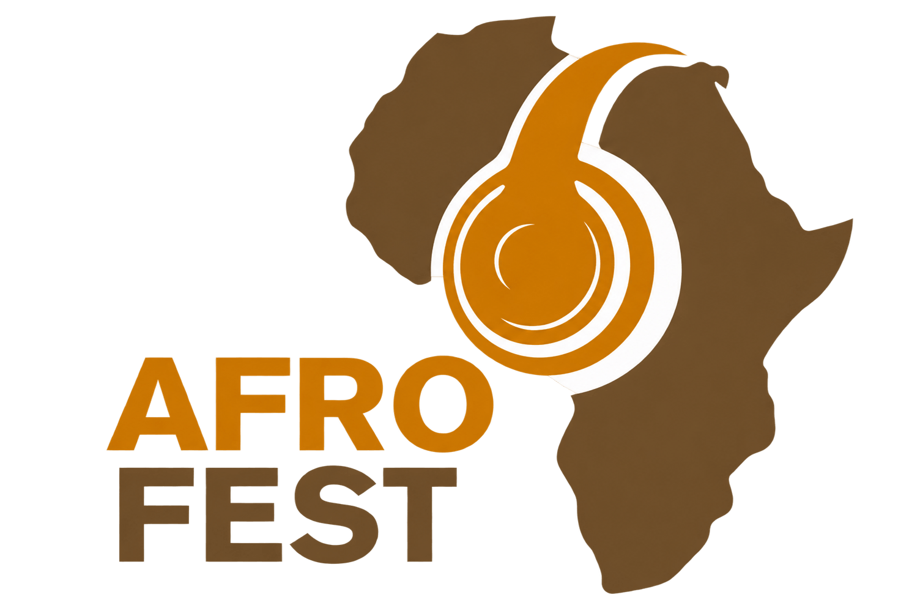

Missão
Promover cultura, ligação, empreendedorismo e cooperação através de uma plataforma africana contemporânea.

AFROFEST
Lusofonia sem fronteiras.
Cultura, ligação, empreendedorismo e cooperação através de uma plataforma africana contemporânea.
Conhecer a AFROFESTIdentidade
A AFROFEST nasce com uma ambição clara: valorizar a identidade africana no espaço lusófono e criar ligações entre culturas, comunidades e oportunidades.
A nossa expressão procura ser elegante, clara e consistente — com uma linguagem visual assente em preto, dourado e tons quentes, e uma comunicação focada em autenticidade e impacto.
Propósito
Promover cultura, ligação, empreendedorismo e cooperação através de uma plataforma africana contemporânea.
Ser uma referência internacional na valorização da identidade africana no espaço lusófono.
Valores
Uma Língua. Várias Culturas.
Lusofonia sem fronteiras.